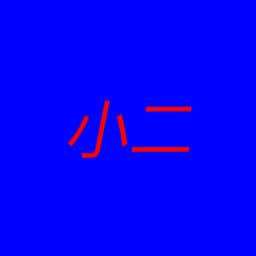
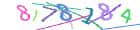
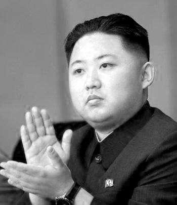
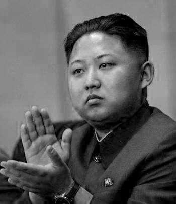
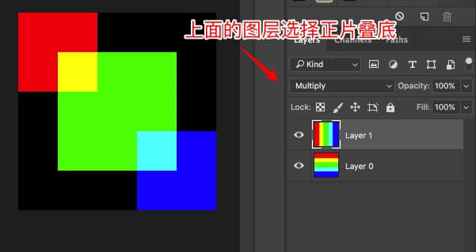
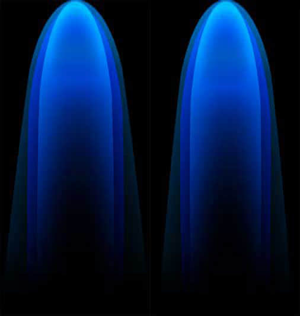
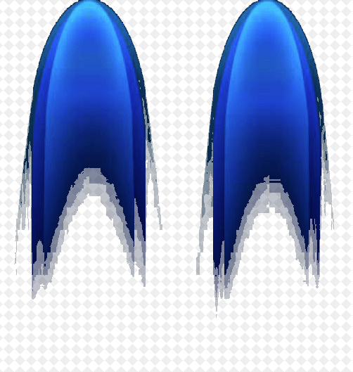

所谓的高级
其实就是针对一些图片实际使用场景而封装的方法，因为生成结果是图片不方便验证结果，所以请自行肉眼判断
添加水印
添加位置默认提供9个选择:
- Images.WATERMARK_TOP_LEFT
- Images.WATERMARK_TOP_CENTER
- Images.WATERMARK_TOP_RIGHT
- Images.WATERMARK_CENTER_LEFT
- Images.WATERMARK_CENTER
- Images.WATERMARK_CENTER_RIGHT
- Images.WATERMARK_BOTTOM_LEFT
- Images.WATERMARK_BOTTOM_CENTER
- Images.WATERMARK_BOTTOM_RIGHT
例如：上面中间添加图片水印, 75%透明度，10像素边距
img = Images.addWatermark(bgImg, watermarkImg, 0.75f, Images.WATERMARK_TOP_CENTER, 10);
效果如图：

生成文字
根据文字生成图片的小工具，文字会自动居中。
直接生成黑底白字
img = Images.createText("随便写");
手动设置图片大小，文字/背景色，字体，字体样式, 字体大小等
img = Images.createText("这是非常长的一句话，你可能会觉得真的有那么长吗，是的还是挺长的", 1100, 200, "#F00", "#FF0", "微软雅黑", 32, Font.PLAIN);
效果如图：

生成头像
根据文字生成图片的小工具，适用于一些生成头像的场景。这里根据文字长度做了一点限制，2字以内显示，超过只显示第一个文字。
直接生成黑底白字
img = Images.createAvatar("王小二");
效果如图：

手动设置图片大小，文字/背景色，字体，字体样式, 字体大小等
img = Images.createAvatar("小二", 256, "rgba(255,0,0,1)", "rgb(0,0,255)", "微软雅黑", 64, Font.ITALIC);
效果如图：

生成验证码
将指定的文字内容生成验证码。验证码的生成步骤如下：
1. 随机选择颜色与字体2. 文字写入3. 添加干扰线4. 图像整体进行扭曲
对于验证码内容，可以使用Nutz中Lang包提供的R.captchaNumber或R.captchaChar，也可以填入任意内容。
比如生成6位数字验证码：
img = Images.createCaptcha(R.captchaNumber(6));
效果如下：

比如生成6位字符+数字验证码：
img = Images.createCaptcha(R.captchaChar(6));
效果如下：

如果要生成其他字符的，比如中文，则需要手动指定字体名称，否者容易产生乱码：
img = Images.Images.createCaptcha("胖五是好人", 0, 0, null, "#FFF", "微软雅黑");
效果如下：

也可以指定前后背景颜色，这样不会显得那么花哨了：
img = Images.createCaptcha(R.captchaChar(10), 0, 0, "#000", "#FFF", null);
效果如下：

灰度图
变灰度图的原理就是将每个像素的RGB值设置成一样，这样整个图片只有黑白与中间的过渡色了。
img = Images.grayImage(srcImg);
原图：

灰度图：

三原色通道
熟悉PS的同学应该知道通道这个概念， 这里提供了直接生成各个通道的图片的方法

通道的选项：
- Images.CHANNEL_RED
- Images.CHANNEL_GREEN
- Images.CHANNEL_BLUE
img = Images.channelImage(srcImg, Images.CHANNEL_RED);
红色通道图：

绿色通道图：

蓝色通道图：

正片叠底效果
这算是比较高级的图像处理了，PS中可以通过修改图层上的设置而达到效果。
具体的实现原理可以看下这个文章 《图层混合模式“正片叠底”颜色计算公式的详解》，讲的还算通俗。
下面这个图可以说是最佳示例了：

img = Images.multiply(bgImg, itemImg, 0, 0);
使用场景么，一般可用于两张图片融合，比如给金将军加个太阳什么的
将军图：
太阳图：

正片叠底后的效果：

抠图方法1
通过指定背景像素，然后遍历像素后，在指定范围内的就当做背景然后设置为透明。
该方法适合背景与前景相差特别大的图片，最好是背景颜色基本一致，前景背景有明显分隔界限。
比如来个机器猫：

选区0，0像素当做背景即可，范围20
img = Images.cutoutByPixel(srcImg, 0, 0, 20);
抠图后：

抠图方法2
通过指定某个通道或采用亮度作为透明的依据进行图片透明处理。
比如这个蓝色火焰与黑色背景融合在一起的图：

如果采用指定背景进行Cut，效果如下：

很明显，这样过渡区域的像素处理的很不自然。
通过亮度来抠图:
img = Images.cutoutByLuminance(srcImg);
效果如图：

看上去好多了，但是蓝色被消除的太多了，再改用蓝色通道进行抠图：
img = Images.cutoutByChannel(srcImg, Images.CHANNEL_BLUE);
效果如图：

该例子引用了 ~的星辰大海的这篇blog ，有兴趣看原理的可以了解下。